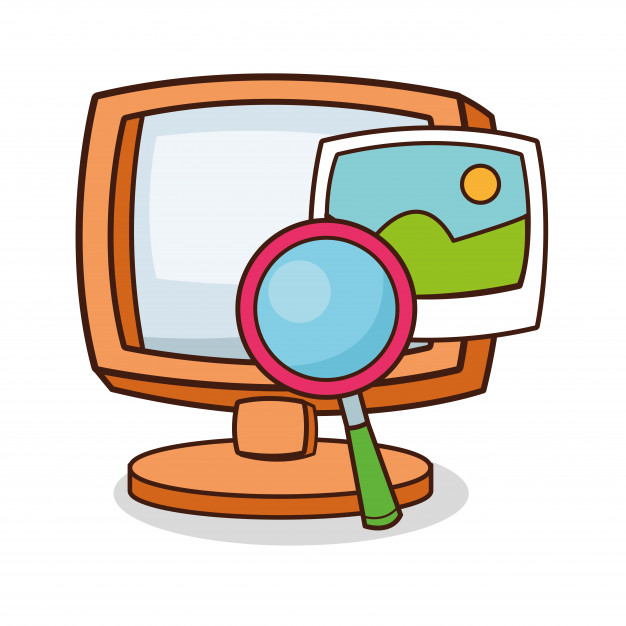

El Razonamiento Verbal
Como lo afirma Orellana, L. (2.015), el Razonamiento Verbal, se trata de la capacidad para razonar con
contenidos verbales, estableciendo entre ellos principios de clasificación, ordenación, relación y
significados
Según Negrete, L. M. (2014), el razonamiento es también un proceso lógico mediante el cual, se parte de
uno o más juicios, se deriva la verdad, la posibilidad o falsedad de otro juicio distinto. A la lógica le
corresponde tanto el estudio de los argumentos como el estudio del razonamiento expresando conocimientos ya
adquiridos. El razonamiento permite ampliar los conocimientos sin tener que apelar a la experiencia, y
también sirve para justificar o aportar razones en favor de lo que se conoce o se cree conocer.

El Pensamiento Computacional
El proceso de reunir información apropiada.
Encontrar sentido, establecer patrones y sacar conclusiones.
Organizar los datos en gráfico, cuadros, palabras o imágenes.
Dividir una tarea en partes maás pequeñas y manejables.
Encontrar sentido, establecer patrones, y sacar conclusiones.
Serie de pasos ordenados que se siguen para resolver un problema y lograr un objetivo.
Hacer que las máquinas realicen tareas tediosas y repetitivas.
Representar y modelar un proceso, realizar un experimento.
Organizar los recursos para realizar tareas de forma simultánea.
Con el objetivo de conceptualizar el PC se realizó una revisión bibliográfica de la cual se
quiere
resaltar las siguientes definiciones:
Según Formación Docente. (s.f), trata del proceso de pensamiento a través del cual una persona plantea un
problema y su posible solución o soluciones de tal manera que este pueda ser resuelto utilizando una
secuencia de instrucciones ejecutadas por un humano, una computadora o ambos. Es utilizado para resolver
problemas de distintas disciplinas como pueden ser las Matemáticas, Biología, Humanidades… y entre sus
características involucra el entendimiento del comportamiento humano aplicando conceptos estructurales de la
computación.
El PC implica “modelos mentales que se necesitan para entender cómo resolver problemas a través de los
computadores” (Bravo-Lillo, 2015, p.49).